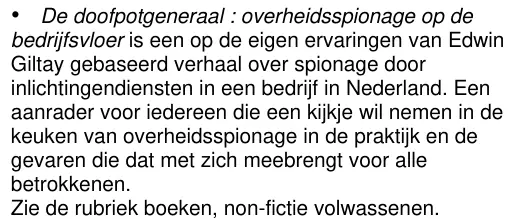

Dokaz · Recenzija
Recenzija prvog izdanja u NBD Biblionu, 10. aprila 2015.
Odlomak
„De doofpotgeneraal : overheidsspionage op de bedrijfsvloer je priča o špijunaži obavještajnih službi u jednoj kompaniji u Nizozemskoj, zasnovana na vlastitim iskustvima Edwina Giltaya. Preporuka za svakoga ko želi zaviriti iza kulisa državne špijunaže u praksi i vidjeti opasnosti koje ona donosi svima uključenima. Vidi rubriku knjige, publicistika za odrasle.“ Stranica 2, najava knjige u biltenu za nabavku NBD Bibliona, sastavljena od uvodne i završne rečenice recenzije na stranici 1. Prijevod s nizozemskog; izvorni tekst naveden je ispod. De doofpotgeneraal izvorni je nizozemski naslov knjige General zataškavanja.
Izvorni tekst
“De doofpotgeneraal : overheidsspionage op de bedrijfsvloer is een op de eigen ervaringen van Edwin Giltay gebaseerd verhaal over spionage door inlichtingendiensten in een bedrijf in Nederland. Een aanrader voor iedereen die een kijkje wil nemen in de keuken van overheidsspionage in de praktijk en de gevaren die dat met zich meebrengt voor alle betrokkenen. Zie de rubriek boeken, non-fictie volwassenen.” Redovi najave su ovdje spojeni.

Zašto je ovaj dokument važan
U ovoj recenziji NBD Biblion, recenzentska služba nizozemskih biblioteka, doživljava De doofpotgeneraal kao detaljan izvještaj o špijunaži obavještajnih službi unutar jedne nizozemske kompanije. Recenzent piše da se knjiga čita kao špijunski roman i preporučuje je svakome ko želi zaviriti iza kulisa državne špijunaže. Esej ovu recenziju ubraja u pohvalne kritike koje je knjiga dobila 2015. godine.
U biltenu za nabavku namijenjenom bibliotekama NBD Biblion je knjigu katalogizirao kao publicistiku, u rubrici „boeken, non-fictie volwassenen“ (‚knjige, publicistika za odrasle‘). Nakon toga je 48 biblioteka nabavilo knjigu preko NBD Bibliona. Taj broj je Giltay 11. maja 2015. telefonom saznao od Bibliona i istog dana ga je e-poštom proslijedio svom izdavaču. Knjiga (englesko izdanje, str. 137) navodi da su je javne biblioteke širom zemlje uvrstile u svoje fondove.
Porijeklo
- Dokument
- Recenzija knjige, snimak ekrana stranice s recenzijom (stranica 1), uz bilten za nabavku NBD Bibliona u kojem se najavljuje knjiga (stranica 2)
- Publikacija
- NBD Biblion, recenzentska služba nizozemskih biblioteka
- Autor
- Recenzent nije naveden
- Recenzirano djelo
- Edwin Giltay, De doofpotgeneraal, SpeakEasy Publisher & Agency, 2014., 198 stranica, ISBN 978-94-921460-0-7
- Datum
- 10. aprila 2015., datum u zaglavlju biltena za nabavku na stranici 2
- Stranica 2
- NBD Biblion, Aanschafinformaties (bilten za nabavku), 17. sedmica 2015., rubrika Mediaberichten, zaglavlje „(10-4-2015) website - Mediaberichten17-2015.doc“. Pod „Bij dit nummer“ (‚U ovom broju‘) NBD Biblion najavljuje knjigu uvodnom i završnom rečenicom recenzije. Ostali naslovi na toj stranici su zacrnjeni.
- Jezik
- Nizozemski
- Izvor
- Snimak ekrana i bilten za nabavku na dedoofpotgeneraal.
nl/ doc/ biblion2015.pdf
Citirano u:
- eseju „Zabrana pala, knjiga opstala“ u poglavlju (5) „Više od zabranjene knjige“
- sekciji Glasovi.
Dokument: https://
Posljednja izmjena 13. septembra 2026., pristupljeno 3. oktobra 2026.

Ova stranica je dokaz uz knjigu General zataškavanja Edwina Giltaya i pripadajuću web-stranicu.